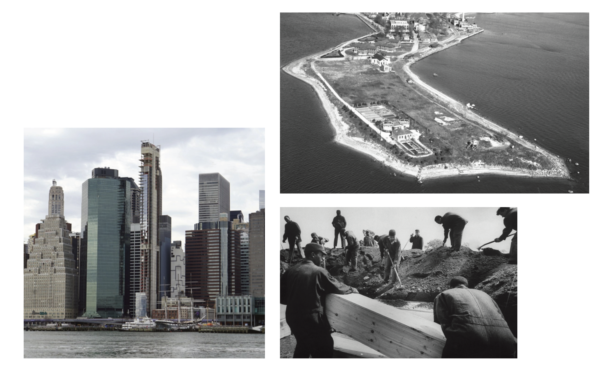
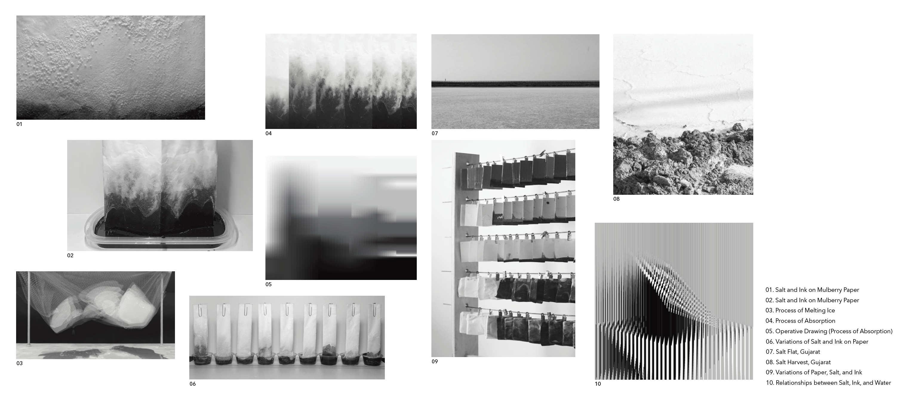
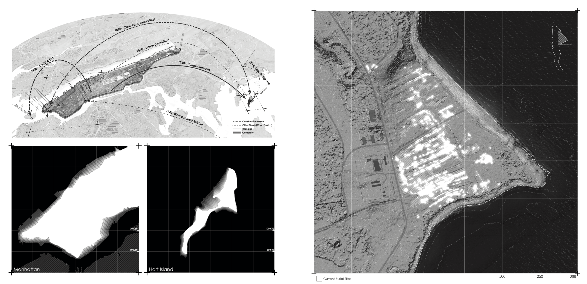
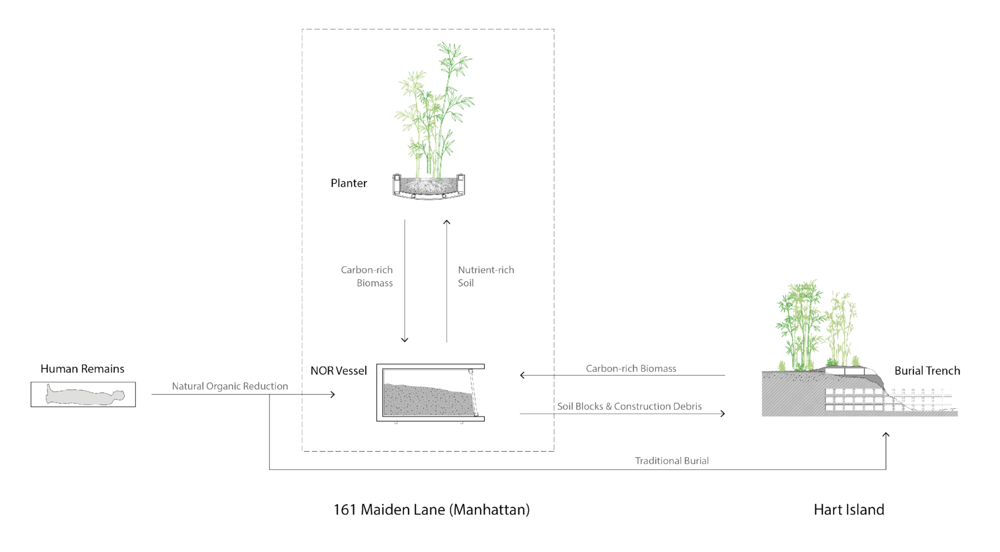
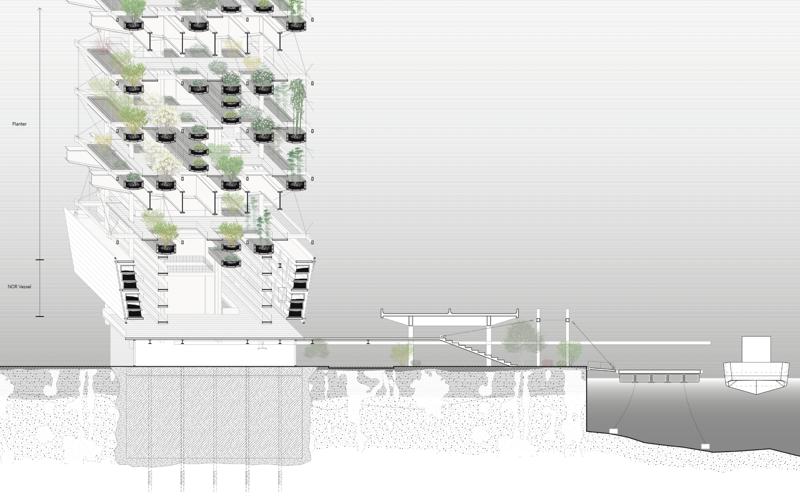
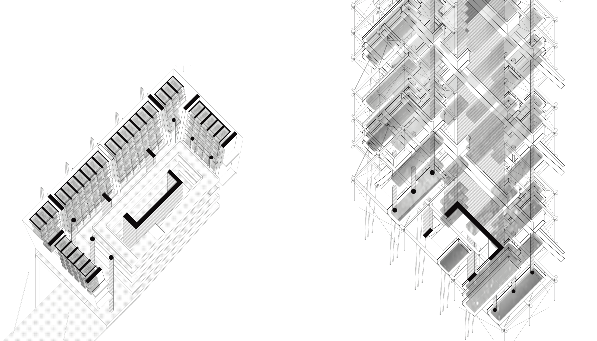
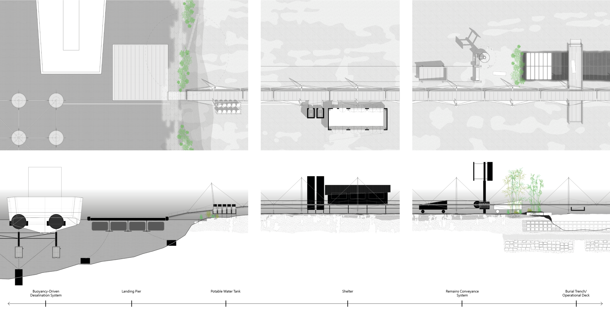
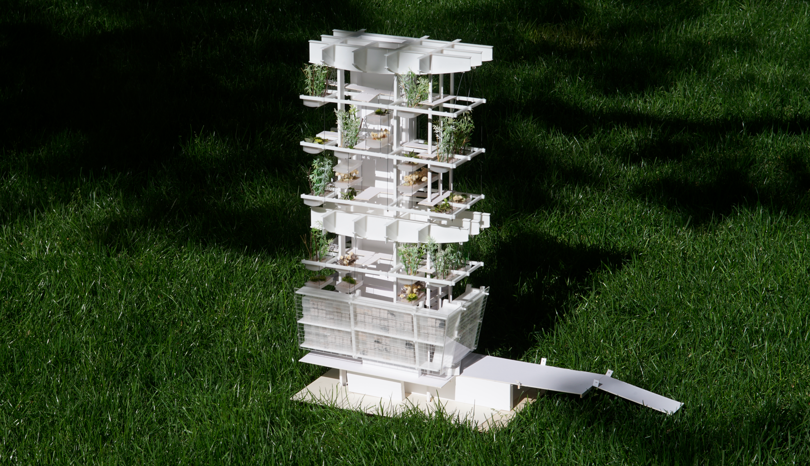
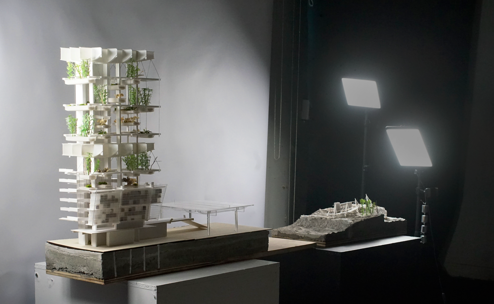

A Territorial Cycle Between Manhattan and Hart Island

The Restorative Spine
This project examines New York City’s narrative of death, a story currently suspended between two disparate islands. Hart Island holds a century-long history as the municipal cemetery, yet faces an existential threat from coastal erosion and depleting capacity. In contrast, Manhattan has prohibited human burials since 1850, creating a sterile void. By occupying 161 Maiden Lane—an abandoned, stalled construction project in Manhattan—this design introduces a new burial infrastructure. It acts as a restorative mechanism to mediate between these two vulnerable sites, reintroducing the cycle of life and death back into the urban fabric.

The Accumulation of Presence and Absence
This conceptual study explores the transient nature of matter, observing how ephemeral shifts—like evaporation, coagulation, and crystallization—mirror transformations across multiple scales, from the decay of human remains to the eroding coastlines of islands. By capturing this continuous flux, the architecture frames the fleeting transition between "absence" and "presence," operating not as a static object, but as a living ledger of spatial and material change.

The Growth & Decline of Islands
A continuous metabolic exchange dictates the growth and decline of these islands. On Hart Island, decomposing organic matter and settling earth gradually translate subterranean burial grids into an undulating, living topography, generating new coastlines across the urban archipelago.

The Logistical Machine
A synchronized mechanical system connects the islands. Hart Island generates and exports bamboo, wood chips, and crystallized salt from desalination. At 161 Maiden Lane, a vertical transport system distributes these resources into the building's ecosystem and Natural Organic Reduction (NOR) facility, fueling a continuous cycle.

161 Maiden Lane
We propose a Natural Organic Reduction (NOR) facility within the paused exoskeleton of 161 Maiden Lane, processing ~1,500 bodies annually to generate nutrient-rich soil. The partially dismantled upper structure becomes a vertical ecosystem, shaped by solar carving to cultivate the organic roots and carbon material essential for the NOR process.

Vertical Ecosystem
Rather than a static object, this intervention acts as a macro-scale urban infrastructure. Managing metabolic flows within the 161 Maiden Lane tower reclaims a stalled urban void to negotiate with built instability and fuel a territorial cycle.

Restorative Infrastructure
To sustain Hart Island’s burial legacy, nutrient-rich soil produced at 161 Maiden Lane is exported to raise the island's ground elevation and resist coastal erosion. The master plan integrates public ferries with resource vessels, introducing buoyant desalination devices and adaptable 'telescopic' shelters to support visitors and shifting topographies.


A Poetic Infrastructure
This system redefines the 21st-century cemetery as a territorial infrastructure. By linking production at 161 Maiden Lane to Hart Island's restoration, the urban cycle of death becomes a proactive tool for land reclamation, protecting the city's most vulnerable landscapes.